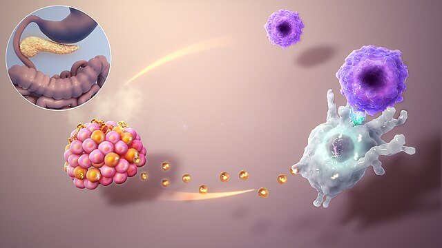
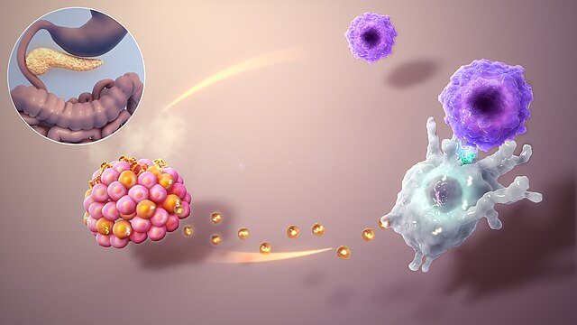
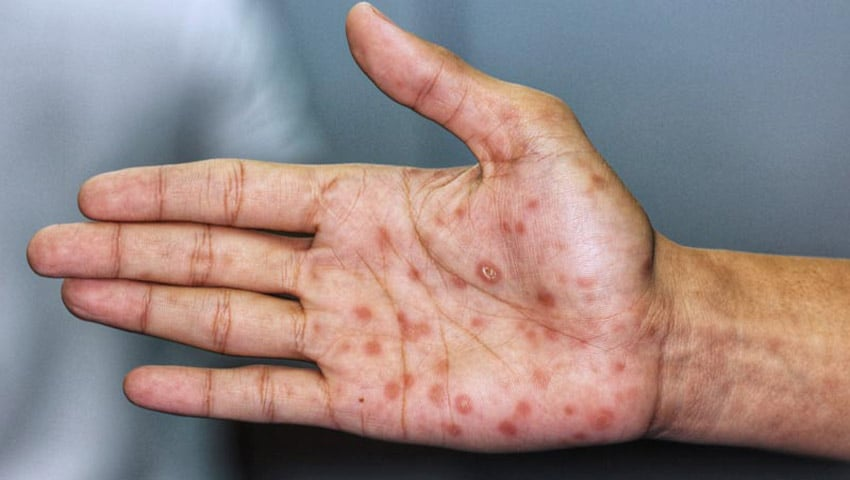

Diabetes
Diabetes: afección que se produce por un problema en la forma en que el cuerpo regula y usa el nivel de azúcar como combustible
Diabetes: afección que se produce por un problema en la forma en que el cuerpo regula y usa el nivel de azúcar como combustible
Sifilis: Enfermedad infecciosa, endémica, crónica, específica, causada por el Treponema pallidum, adquirida por contagio o transmitida por alguno de los progenitores a su descendencia.
Haz click en las diferentes áreas del cuerpo para aprender sobre enfermedades relacionadas con cada sistema: